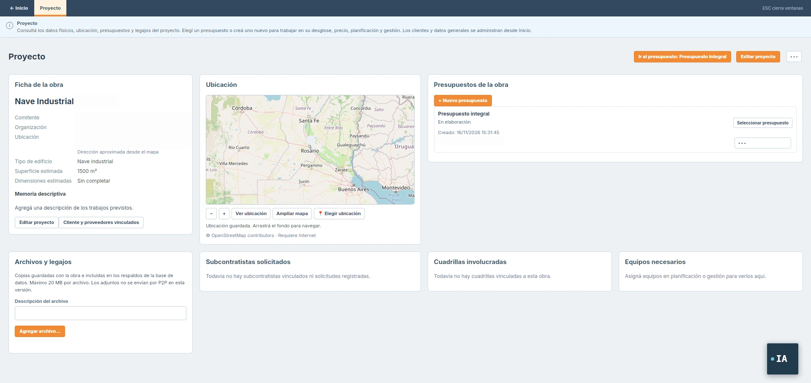
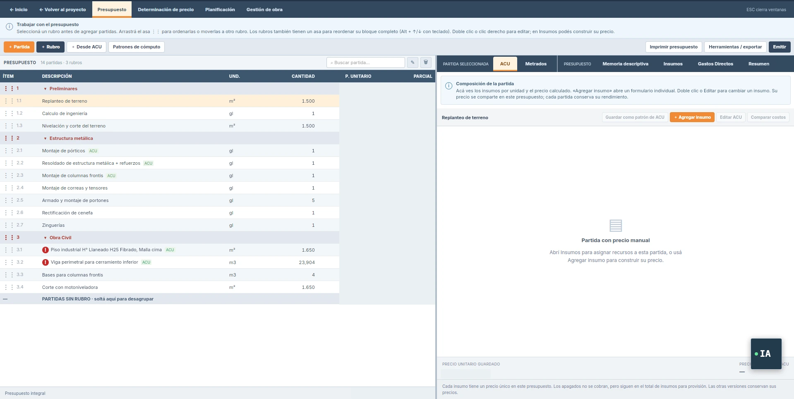
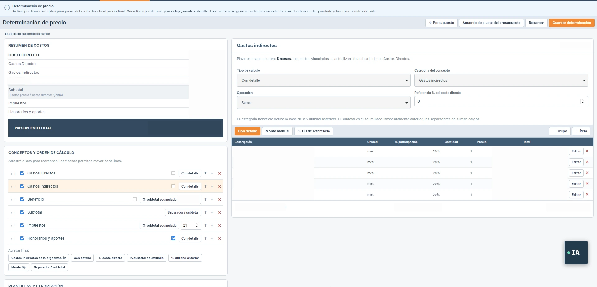
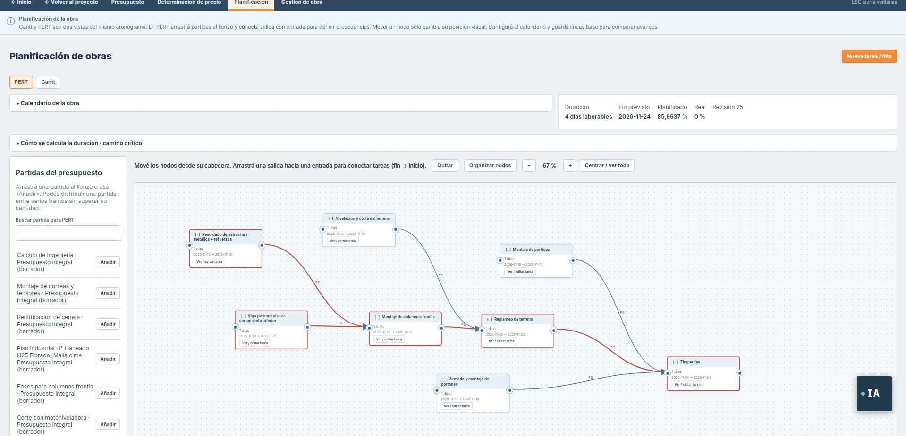
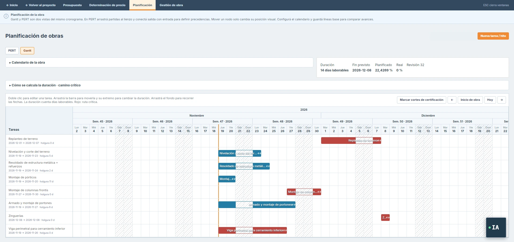
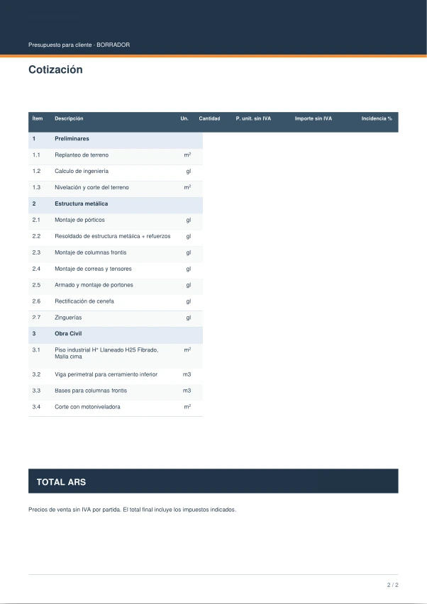

Cómputos y presupuestos
Organizá rubros, subrubros, partidas y metrados con fórmulas. Compará versiones, reutilizá patrones de otras obras y trabajá con Excel, CSV o JSON según la operación.
Patrones y preciosSoftware de obra para Argentina
Computá cantidades, armá precios y planificá la ejecución en una aplicación de escritorio. Empezá con una planilla corta y agregá detalle a medida que lo necesites.
Windows · macOS · Linux
| Partida | Cantidad | Importe |
|---|---|---|
| Retiro de revestimiento | 12 m² | $36.000 |
| Colocación de cerámicos | 12 m² | $144.000 |
| Instalación de artefacto | 1 ud | $45.000 |
| Costo directo | $225.000 | |
Importes ilustrativos en pesos argentinos.
Para cotizar una refacción, preparar una oferta por rubros o dirigir una obra con compras, avances y certificaciones. Está pensado para profesionales de arquitectura, contratistas y equipos de obra.
Organizá rubros, subrubros, partidas y metrados con fórmulas. Compará versiones, reutilizá patrones de otras obras y trabajá con Excel, CSV o JSON según la operación.
Patrones y preciosArmá bibliotecas de insumos y análisis de costos unitarios. Usá listas e historial de precios, rendimientos, desperdicios y conversiones con cotización explícita. Sumá gastos, utilidad, honorarios, aportes e impuestos según corresponda.
Determinación de precioVinculá partidas con tareas, recursos e hitos. Organizá dependencias y tramos con Gantt y PERT, y seguí calendario, holguras, ruta crítica y curva S.
Guía de planificaciónRegistrá compras, stock, materiales, acopios, producción y subcontratos. Usá el libro de obra y consultá el avance a una fecha de corte.
Libro de obra y comprasPrepará y emití certificados, aplicá índices como CAC o IPC según el convenio y registrá anticipos y adicionales. Proyectá cobros, pagos y capital necesario, y controlá el fondo de obra.
Previsión financieraAdministrá clientes, proveedores, organizaciones, contratos y legajos. Guardá los datos en una base local SQLite, generá copias y compartí consultas de una obra mediante invitaciones P2P de solo lectura.
Vinculación P2PGenerá PDF o Excel para el cliente, una versión interna con costos o una planilla de incidencias. Elegí qué conceptos mostrar por separado en la cotización.
Impresión y exportaciónPrepará partidas, insumos, rendimientos y metrados con OpenAI o Claude. Usá tu propia clave de API y revisá las propuestas antes de incorporarlas. Las consultas autorizadas pueden generar cargos del proveedor.
Configuración y alcanceSeguí la colocación de cerámicos del ejemplo. Los valores en ARS y los consumos son ficticios.
En Proyecto → Nuevo presupuesto, agregá el rubro Revestimientos y la partida Colocación de cerámicos. Cargá la unidad, la cantidad y el precio unitario manual.
12 m² × $12.000/m² = $144.000
Con el retiro y la instalación de la tabla, el costo directo de la refacción es $225.000.
En Metrados, cargá las superficies por separado. Así podés revisar de dónde sale la cantidad y actualizarla si cambia una medida.
6,00 + 7,68 − 1,68 = 12,00 m²
Podés guardar el cómputo como patrón y reutilizar sus fórmulas en otra obra.
En Insumos de la partida, asigná materiales y mano de obra por cada m² colocado. El análisis de costos unitarios (ACU) multiplica cada consumo por su precio y suma los parciales.
| Insumo | Consumo × precio | Parcial |
|---|---|---|
| Cerámicos | 1,10 m² × $6.000/m² | $6.600 |
| Adhesivo | 4 kg × $350/kg | $1.400 |
| Mano de obra | 0,50 h × $8.000/h | $4.000 |
| Costo unitario | $12.000 | |
El cerámico incluye un 10% de desperdicio en el consumo. Con 12 m² medidos, la partida sigue dando $144.000.
En Determinación de precio, aplicá, por ejemplo, 10% de gastos generales sobre el costo directo de la obra y 15% de utilidad sobre el subtotal. Elegí la base de cada concepto según tu presupuesto.
$225.000 + $22.500 + $37.125 = $284.625 antes de impuestos
Revisá el resultado y exportá la cotización para el cliente. Podés vincular las partidas con el cronograma y usar el presupuesto como base para certificar avances.






Elegí la descarga portable para tu sistema en la última publicación de GitHub. Abrí la aplicación y creá una obra desde Inicio para armar tu primer presupuesto.
Si encontrás un error, contá qué hiciste, qué esperabas, qué ocurrió y qué versión y sistema usás. También podés proponer mejoras o enviar un pull request con código o documentación.
El patrocinio económico de CP Obras está pendiente de activación. Mientras tanto, podés apoyar el desarrollo con reportes, ideas y aportes al repositorio.
Ver el proyecto en GitHub ↗